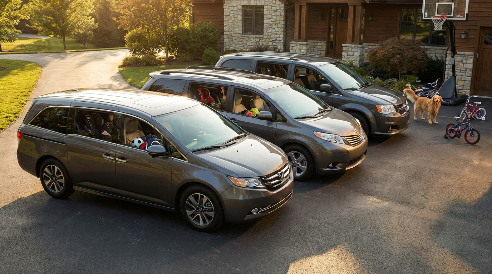

Minivan Drivers Are the Soberest People on the Road. And It’s Not Even Close.

According to the toxicology reports — and there are a lot of them — something remarkable happens when you slide behind the wheel of a minivan. You become, statistically speaking, a better person. NHTSA fatality data reveals that minivans have an average impairment rate of just 15.4% in fatal crashes, compared to 20.0% nationally. Sports cars clock in at 22.5%. That’s not a rounding error. That’s a lifestyle filter.
Here’s the full class leaderboard — and it reads exactly like a personality test:
| Vehicle Class | Avg. Impairment | vs. National |
|---|---|---|
| Vans/Minivans | 15.4% | −4.6 pts |
| SUVs | 19.5% | −0.5 pts |
| Pickups | 20.1% | +0.1 pts |
| Sedans | 20.4% | +0.4 pts |
| Sports Cars | 22.5% | +2.5 pts |
Now let’s go vehicle by vehicle in the minivan segment, because the numbers are almost aggressively wholesome:
| Minivan | Impairment | Alcohol | Drugs | Drivers |
|---|---|---|---|---|
| Nissan Quest | 14.5% | 10.7% | 6.2% | 242 |
| Dodge Grand Caravan | 15.3% | 11.2% | 7.0% | 2,627 |
| Honda Odyssey | 15.4% | 11.3% | 6.6% | 2,641 |
| Kia Sedona | 18.4% | 14.1% | 8.8% | 580 |
| Toyota Sienna | 19.0% | 14.0% | 8.5% | 2,430 |
| Chrysler Pacifica | 20.0% | 15.1% | 10.0% | 1,073 |
The Nissan Quest and Dodge Grand Caravan — two vehicles that have never once been described as “aspirational” — have impairment rates 25% below the national average. The Honda Odyssey, a vehicle whose entire marketing pitch is “it has a built-in vacuum cleaner,” comes in at 15.4%. These are not vehicles driven by people planning to hit a bar at midnight.
Compare that to the other end of the spectrum. The Chevrolet Corvette: 26.2% impairment. The Cadillac CTS: 25.9%. The Infiniti G37: 25.0%. The Buick Park Avenue, inexplicably, at 31.7%. The gap between a Grand Caravan driver and a Corvette driver in a fatal crash is 11 percentage points. That’s not noise. That’s a different relationship with alcohol.
What’s happening here isn’t complicated. Nobody buys a minivan as an impulse purchase. Nobody leases a Dodge Grand Caravan to impress anyone. These are vehicles purchased by people who have, for better or worse, accepted that their automotive life revolves around car seats, soccer practice, and Costco runs. The kind of people who plan ahead. The kind of people who designate a driver.
The data doesn’t prove that minivans cause sobriety any more than Corvettes cause alcoholism. But it does prove something insurance actuaries have known for decades: the vehicle you choose is a proxy for how you live. Every car purchase is a behavioral confession. And the minivan’s confession is: I have somewhere to be tomorrow morning, and small humans are depending on me to get there.
The irony, of course, is that the Grand Caravan — the soberest vehicle in this dataset — has a death rate of 1.33 per 100M VMT. The Odyssey does 0.93. The Chrysler Pacifica, the newest of the bunch, sits at a remarkable 0.19. Sober drivers in safe vehicles. It turns out the most boring car on the road is also the most responsible thing you can drive.
Your Corvette-driving neighbor with the vanity plate might not want to hear it, but the data is clear: the most dangerous thing about a sports car isn’t the horsepower. It’s the person it attracts.